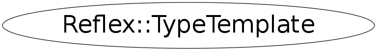

Function Members (Methods)
public:
Data Members
private:
| const Reflex::TypeTemplateName* | fTypeTemplateName |
Class Charts
{kind=link}
{kind=link}
{kind=link}
{kind=link}

Function documentation
TypeTemplate ByName(const string& name, size_t nTemplateParams = 0)
* ByName will return a type template corresponding to the argument name
* @param type template name to lookup
* @param nTemplateParams looks up the template family with this number of template parameters
* if it is set to 0, the first occurence of the template family name will be returned
* @return corresponding type template to name
std::string Name(unsigned int mod = 0) const
Type_Iterator TemplateInstance_Begin() const
* TemplateInstance_Begin returns the begin iterator of the instance container
* @return the begin iterator of the instance container
Type_Iterator TemplateInstance_End() const
* TemplateInstance_End returns the end iterator of the instance container
* @return the end iterator of the instance container
Reverse_Type_Iterator TemplateInstance_RBegin() const
* TemplateInstance_RBegin returns the rbegin iterator of the instance container
* @return the rbegin iterator of the instance container
Reverse_Type_Iterator TemplateInstance_REnd() const
* TemplateInstance_Rend returns the rend iterator of the instance container
* @return the rend iterator of the instance container
Type TemplateInstanceAt(size_t nth) const
* TemplateInstanceAt will return a pointer to the nth template instantion
* @param nth template instantion
* @return pointer to nth template instantion
TypeTemplate TypeTemplateAt(size_t nth)
* TypeTemplateAt will return the nth type template defined
* @param nth type template
* @return nth type template
TypeTemplate_Iterator TypeTemplate_Begin()
* TypeTemplate_Begin returns the begin iterator of the type template container
* @return begin iterator of type template container
TypeTemplate_Iterator TypeTemplate_End()
* TypeTemplate_End returns the end iterator of the type template container
* @return end iterator of type template container
Reverse_TypeTemplate_Iterator TypeTemplate_RBegin()
* TypeTemplate_Rbegin returns the rbegin iterator of the type template container
* @return rbegin iterator of type template container
Reverse_TypeTemplate_Iterator TypeTemplate_REnd()
* TypeTemplate_Rend returns the rend iterator of the type template container
* @return rend iterator of type template container
void AddTemplateInstance(const Reflex::Type& templateInstance) const
* AddTemplateInstance adds one TemplateInstanceAt of the template to the local container
* @param templateInstance the template TemplateInstanceAt